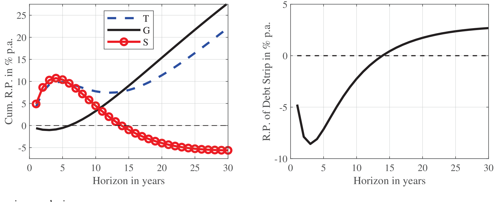
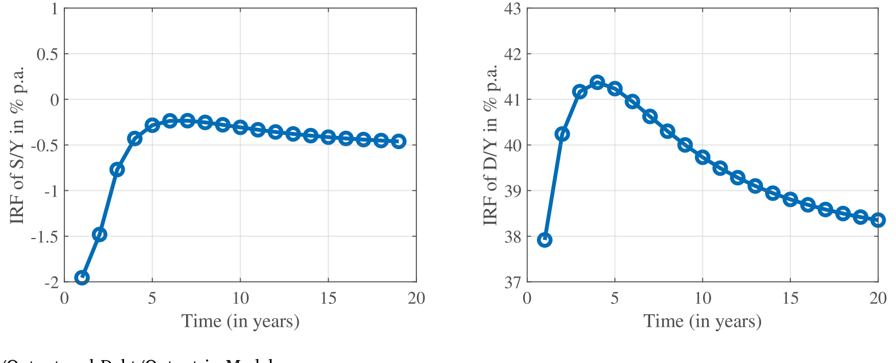
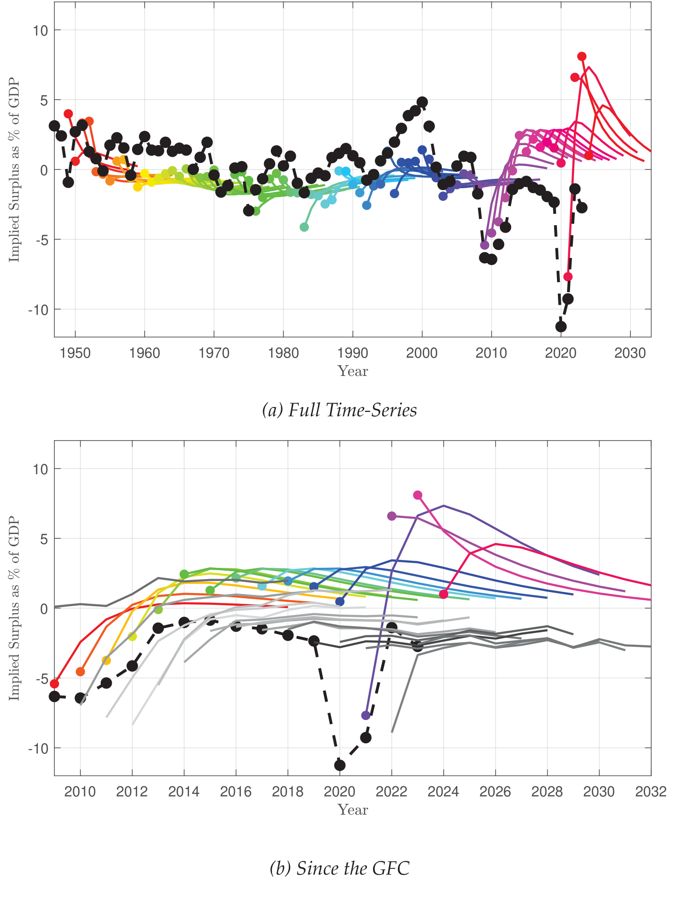
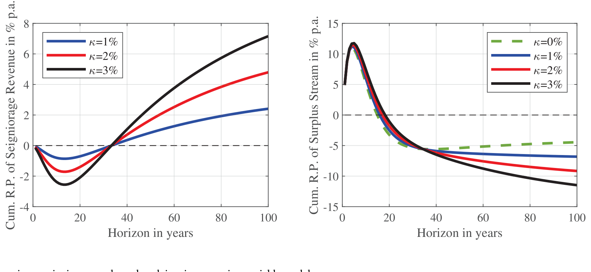
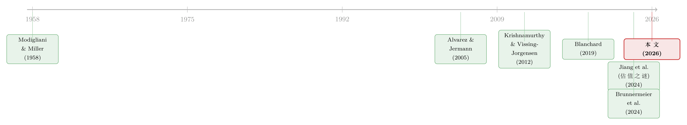

<!DOCTYPE html>
<html lang="en">
<head>
<meta charset="utf-8">
<meta name="viewport" content="width=device-width, initial-scale=1">
<title>无风险国债是「制造」出来的：被保护的是谁，被牺牲的又是谁 – Jun He</title>
<style>
  @font-face {
    font-family: 'STIX Two Text';
    font-style: normal;
    font-weight: 400;
    font-display: swap;
    src: url(https://fonts.gstatic.com/s/stixtwotext/v12/YA9Gr02F12Xkf5whdwKf11l0p7uWhf8lJUzXZT2omsvbURVuMkWDmSo.woff2) format('woff2');
  }
  @font-face {
    font-family: 'STIX Two Text';
    font-style: normal;
    font-weight: 500;
    font-display: swap;
    src: url(https://fonts.gstatic.com/s/stixtwotext/v12/YA9Gr02F12Xkf5whdwKf11l0p7uWhf8lJUzXZT2omsvbURVuMkWDmSo.woff2) format('woff2');
  }
  @font-face {
    font-family: 'STIX Two Text Fallback';
    src: local('Times New Roman');
    ascent-override: 72.67%;
    descent-override: 22.7%;
    line-gap-override: 23.84%;
    size-adjust: 104.86%;
  }
</style>
<link rel="stylesheet" href="/styles.css?v=10">
<link rel="stylesheet" href="/article.css?v=11">

</head>
<body>

<header class="site-header">
  <nav>
    <a href="/" class="nav-name">Jun He</a>
    <a href="/posts">Post</a>
    <a href="/research">Research</a>
    <a href="/note">Note</a>
    <a href="/data">Data</a>
    <a href="/bergen">Bergen</a>
  </nav>
  <button class="theme-toggle" aria-label="Toggle theme" onclick="toggleTheme()">🌞</button>
</header>

<article class="article-layout" data-section="research">
  
  <div class="article-main">
    <div class="article-header">
      <h1>无风险国债是「制造」出来的：被保护的是谁，被牺牲的又是谁</h1>
      
      
      <div class="paper-source">
        <div class="paper-source-title"><span class="paper-source-tag">[2026 JFE]</span> Manufacturing Risk-free Government Debt</div>
        <div class="paper-source-authors"><a href="/research/author/zhengyang-jiang/">Zhengyang Jiang</a>, <a href="/research/author/hanno-lustig/">Hanno Lustig</a>, <a href="/research/author/stijn-van-nieuwerburgh/">Stijn Van Nieuwerburgh</a>, <a href="/research/author/mindy-z-xiaolan/">Mindy Z. Xiaolan</a></div>
      </div>
      
      <div class="article-meta">
        <span>Jun He</span>
        <span>May 31, 2026</span>
      </div>
      
      <div class="article-tags">
        
        
        
        <span class="tag">财政政策</span>
        
        
        
        
        <span class="tag">资产定价</span>
        
        
        
        
        <span class="tag">国债</span>
        
        
        
        
        <span class="tag">风险溢价</span>
        
        
      </div>
      
    </div>

    <div class="callout"><div class="callout-title">Note</div><p>本文读的是 <strong>Jiang, Lustig, Van Nieuwerburgh &amp; Xiaolan (2026, Journal of Financial Economics)</strong>：当经济中存在总量风险时，「无风险国债」并不是天上掉下来的，而是政府用纳税人的风险敞口「制造」出来的。一旦坚持让国债的 beta 等于零，政府对盈余 (surplus) 路径就必须满足一组极强的横截面约束；而美国战后、尤其是金融危机以后的数据，干脆利落地拒绝了这组约束。换句话说：这些年被保护的是债券持有人，被牺牲的是纳税人。</p></div>
<h2 id="1">1 一个被默认、却从未被审视的假设</h2>
<p>几乎所有讨论财政可持续性 (fiscal sustainability) 的文献，都从同一个起点出发：政府可以按无风险利率为赤字融资。Blanchard (2019)、Mehrotra and Sergeyev (2021)、Mian et al. (2021)、Ball and Mankiw (2023)、Aguiar et al. (2024)——这一长串名字背后，是一个被反复使用却很少被正面拷问的前提：持有国债组合的回报，对宏观经济状况不敏感，它的 beta 等于零。</p>
<p>这个前提听上去无害，甚至理所当然——美债不就是「无风险资产」的代名词吗？但本文要说的恰恰是：天下没有免费的无风险。一旦你坚持国债是零 beta 资产，你就同时、而且是隐含地，对政府的基本盈余 (primary surplus) 路径下了一道极强的命令。问题在于，几乎没有人把这道命令写出来、再拿去和真实数据对一对。</p>
<p>本文做的就是这件被忽略的事。作者把「无风险债务」这个假设翻译成对盈余过程的约束，然后问一句最朴素的话：美国的财政数据，真的在按这道命令行事吗？</p>
<p>答案是：没有。而且差得离谱。</p>
<h2 id="2">2 核心张力：保险纳税人，还是保险债券持有人？</h2>
<p>要理解全文，先要抓住一个贯穿始终的张力——在有总量风险的世界里，政府没法同时让两类人都不承担风险。</p>
<div class="callout"><div class="callout-title">Tip</div><p>把这件事讲透，本文用了一个极漂亮的类比：Modigliani and Miller (1958)。这是理解整篇论文的钥匙。</p></div>
<p>我们换个角度看政府的资产负债表。政府的「资产」是什么？是未来税收的索取权 (tax claim)，记其现值为 \(P^T_t\)。政府的「负债」是什么？是它发出去的债务 \(D_t\)，加上未来财政支出的索取权 (spending claim) \(P^G_t\)。三者由政府的跨期预算约束绑在一起：\(D_t = P^T_t - P^G_t\)。</p>
<p>于是政府就长得和一家公司一模一样：税收索取权是它的「整体资产」，债务是它的「债权」，支出索取权是它的「股权」。MM 定理告诉我们，资产的风险是债权与股权风险的加权平均。把这句话搬到政府身上，就是本文的 Proposition 1——税收索取权的 beta，是支出索取权 beta 与债务 beta 的加权平均：</p>
<div class="mathanno-block"><div class="mathanno-eq">$$
\beta^T_t = \cssId{a1}{\frac{P^G_t}{D_t+P^G_t}\beta^G_t} + \cssId{a2}{\frac{D_t}{D_t+P^G_t}\beta^D_t}
$$</div><aside class="mathanno-cards"><div class="mathanno-card" data-target="a1"><span class="mathanno-num">1</span>支出索取权（政府的「股权」）的风险，按其在负债中的权重计入</div><div class="mathanno-card" data-target="a2"><span class="mathanno-num">2</span>债务的风险，按债务在负债中的权重计入；把它逼成零，就是「无风险国债」的约束</div></aside><svg class="mathanno-lines"></svg></div>

<p>接着，一个自然的问题是：如果我非要让债务无风险，即 \(\beta^D_t = 0\)，会怎样？把它代进去，第二项消失，剩下 Corollary 1：</p>
<p>$$\beta^T_t = \frac{P^G_t}{D_t+P^G_t}\,\beta^G_t.$$</p>
<p>只要政府有正的债务存量（\(D_t > 0\)），这个权重就严格小于 1，于是 \(\beta^T_t < \beta^G_t\)。</p>
<p>这一步看似平淡，含义却惊人。它说：要「制造」出零 beta 的国债，税收索取权的 beta 必须低于支出索取权的 beta。就像一家公司，要发出无风险的债，它的股权就必须比资产更「险」一样——政府要发出无风险的债，它的税收就必须比支出更「安全」。</p>
<p>可「税收更安全」对纳税人意味着什么？纳税人是税收索取权的<strong>空头</strong>——税是他们交的。一个低 beta 的税收索取权，从纳税人视角看，恰恰是一笔<strong>高风险的税收负债</strong>：经济差的时候税率反而要往上抬（税收下降幅度要小于 GDP 下降幅度），这正是所谓「拧巴的、反方向的」税收 (wrong-way-around taxation)。</p>
<p>于是反转出现了：所谓「无风险国债」，从来不是风险凭空消失，而是风险被从债券持有人身上，转移到了纳税人身上。而且债务存量 \(D_t\) 越大，\(\beta^T_t\) 被压得越低，这个跷跷板就越陡——保险纳税人和保险债券持有人之间的取舍越尖锐。本文反复强调：这个税收 beta 的约束是<strong>通用</strong>的，不依赖于税收和支出过程的具体设定。</p>
<p>（顺带一提：有人说美债是「避险资产」，即 \(\beta^D_t < 0\)，例如 Brunnermeier et al. (2024)。本文指出，若真如此且 \(D_t>0\)，结论只会更强——能给纳税人的保险更少。）</p>
<h2 id="3">3 把张力装进一个可解的资产定价模型</h2>
<p>光有 MM 式的恒等式还不够，它没告诉我们这道约束在量上有多紧。于是作者搭了一个极简、却能闭式求解的资产定价模型。</p>
<p>设定（Assumption 1）干净利落。产出对数服从带永久冲击的随机游走：</p>
<p>$$y_{t+1}-y_t = \mu + \sigma\varepsilon_{t+1},$$</p>
<p>其中 \(\varepsilon_{t+1}\) 是均值零、标准差一的 i.i.d. 正态创新，所有产出冲击都是<strong>永久性</strong>的。对数随机贴现因子 (stochastic discount factor, SDF) 取最简形式：</p>
<p>$$m_{t,t+1} = -\rho - \tfrac{1}{2}\gamma^2 - \gamma\varepsilon_{t+1}.$$</p>
<p>这个 SDF 好就好在：无风险利率是常数 \(\rho\)，风险的市场价格（也就是最大夏普比率 \(Std_t(m_{t+1})\)）是常数 \(\gamma\)。资产 \(i\) 的 beta 定义照搬协方差：</p>
<p>$$\beta^i_t = \frac{-cov_t(M_{t+1},R^i_{t+1})}{var_t(M_{t+1})}.$$</p>
<p>这里藏着本文对既有文献的第一记纠偏。教科书会告诉你，\(r < g\)（利率低于增长率）时政府可以一直跑赤字、债务可持续。但在有<strong>定价的永久产出风险</strong>的世界里，相关的横截性条件 (transversality condition, TVC) 不是 \(r > g\)，而是</p>
<p>$$r + rp > g,$$</p>
<p>其中 \(rp\) 是产出风险溢价。只要永久产出风险的数量 \(\sigma\) 够大、它的价格 \(\gamma\) 够高，\(\mathbb{E}_t[M_{t,t+h}Y_{t+h}]\) 就会随 \(h\to\infty\) 趋于零，TVC 自然满足。换句话说，\(r < g\) 既不是 TVC 被违反的必要条件，也不是充分条件。这一点与 Van Wijnbergen et al. (2020) 在生产模型、Barro (2023) 在灾难风险模型里强调的，是同一回事。本文的校准恰恰落在 \(r < g\) 这一档，却依然能让 TVC 成立——政府确实能在稳态跑赤字，但这绝不是免费午餐：盈余必须在坏状态里更高，纳税人靠在坏时候多交税，给债券持有人当保险。</p>
<h2 id="4">4 关键一步：一个「期限充分统计量」</h2>
<p>但真正关键的一步，在于作者刻画了政府到底能在<strong>多长的时间尺度上</strong>给纳税人提供保险。</p>
<p>他们构造了一个充分统计量：未来 \(h\) 期累积盈余的现金流 beta，\(\beta^{S,CF}_t(h)\)。它的故事是这样的：</p>
<p><strong>短期</strong>——政府完全可以在坏年景多发债、把纳税人的风险敞口往后推（backloading）。只要债务/产出比足够逆周期（坏冲击来了就多发债），短期债务条 (debt strip) 的风险溢价就是负的，政府能跑几年赤字，给纳税人撑一把伞。这体现为 \(\beta^{S,CF}_t(h)\) 在 \(h\) 小的时候为正。</p>
<p><strong>中长期</strong>——天花板出现了。盈余索取权必须变得对债券持有人足够「安全」（对纳税人足够「危险」），才能恰好抵消发债过程里被定价的长期产出风险。于是 \(\beta^{S,CF}_t(h)\) 随 \(h\) 增大趋于零。最极端的，如果今天的债务是无风险的（\(\beta^D_t = \beta^{S,CF}_t(\infty) = 0\)），那么无穷期限的盈余索取权根本不能有风险——<strong>长期对纳税人的保险，无从谈起</strong>。任何对纳税人的长期保护，都会让债务本身变得有风险。</p>
<div class="article-image"></div>
<p><em>Figure 4: Risk premia across horizons</em></p>
<p>这就把第 2 节那个抽象的跷跷板，落到了时间轴上：纳税人保险在量和久期上都被卡死。政府能做的，是靠提高债务/产出比的持续性和逆周期性，把「盈余有风险、纳税人受保护」的窗口往后拉长一点——但也仅此而已。本文给出的唯一出路是：政府想同时保护债券持有人和纳税人，只有一条路——<strong>存钱而不是借钱</strong>（选择 \(D_t < 0\)）。</p>
<p>模型对一次负产出冲击的脉冲响应也讲了同一个故事：政府只能跑几年赤字，之后盈余必须回正。</p>
<div class="article-image"></div>
<p><em>Figure 2: IRF of Surplus/Output and Debt/Output in Model</em></p>
<h2 id="5-52">5 拿去和数据对一对：52% 的鸿沟</h2>
<p>讲了这么多机制，最有杀伤力的还是把模型的「命令」直接喂给数据。</p>
<p>作者的做法干净利落：给定一个能拟合战后美国数据的均值回复债务/产出过程（基准用 AR(2)），无风险债务模型就唯一地反推出一条「债券投资者本应预期的盈余路径」。注意，这条路径<strong>只</strong>依赖债务/产出动态、无风险利率 \(r\) 和预期产出增长 \(g\)——那些刻画 SDF 的资产定价参数全都不相干。然后，逐年喂入真实观测到的债务/产出历史，把隐含的预期盈余一年年地倒出来。</p>
<p>结果是这样的：</p>
<ul>
<li>自金融危机 (Great Financial Crisis, GFC) 起，无风险债务模型就要求美债投资者预期会有<strong>大额的</strong>基本盈余；Covid 期间债务的大扩张，进一步抬高了维持债务无风险所需的未来盈余。</li>
<li>截至 2022 年底，要让债务维持无风险，债券持有人得预期 2023–2032 这十年里累积基本盈余达到 GDP 的 <strong>28%</strong>。</li>
<li>而国会预算办公室 (CBO) 对同一时段的预测，是累积盈余 <strong>−24%</strong> 的 GDP。</li>
<li>两者之间 <strong>52%</strong> 的鸿沟，在经济意义和统计意义上都极大——这是对无风险债务模型一记响亮的拒绝。</li>
</ul>
<div class="article-image"></div>
<p><em>Figure 3: Expected Surpluses</em></p>
<p>更扎心的现实是：美国政府上一次跑出（小额的）基本盈余，是在 2007 年。模型说坏冲击之后只能跑几年赤字，可 GFC 和 Covid 之后我们看到的，是绵延不绝的赤字。而所谓「无风险」的债，在 2020 年 3 月到 2023 年 10 月之间给债券持有人带来的实际回报是 <strong>−25%</strong>——这本身就把「债是有风险的」写在了脸上。</p>
<p>用 Chen et al. (2024) 的话说，无风险债务模型里有「暗物质」(dark matter)：这组横截面约束对盈余动态信息量极大，但也正因为它如此之强、又可能被设定错误，才更让人担心「样本内过拟合、样本外失效」。本文给出的判断是：与其相信盈余日后会突然天量调整、政策制定者能工程出一场巨大的财政修正，不如承认前提本身就站不住——美债不是零 beta 资产，被保护的一直是债券持有人。</p>
<h2 id="6">6 稳健性与延伸：便利收益能不能松绑？</h2>
<p>本文的主结论很经得起折腾。第一，对不同债务持续性都成立，所有命题从 AR(2) 推广到 \(P>2\) 的 AR(P)。第二，引入便利收益 (convenience yield) 后依然成立——这点尤其有意思：来自便利收益的铸币税 (seigniorage) 收入，能在<strong>短期</strong>缓解保险纳税人与债券持有人之间的张力，却以在<strong>长期</strong>加剧这一张力为代价。第三，换成带灾难风险 (disaster risk) 的更丰富资产定价模型，结论照旧。第四，把永久产出冲击换成暂时性冲击，取舍依然存在，只是这时债务发行过程要面对显著的长期利率风险，政府仍得让盈余对债券持有人更安全、对纳税人更危险。</p>
<p>便利收益这一支的风险溢价分解，把「短期松、长期紧」讲得很清楚。</p>
<div class="article-image"></div>
<p><em>Figure 6: Risk premia on seigniorage and surplus claims in convenience yields model</em></p>
<h2 id="7">7 文献脉络</h2>
<p>这条研究的来路，可以顺着两股线索看。</p>
<p>一股是 <strong>MM 的资产定价血统</strong>。Modigliani and Miller (1958) 给出了资产—债权—股权之间的风险加权关系；把它搬到带永久产出风险、且这种风险被实打实定价的环境里，需要 Alvarez and Jermann (2005)、Backus et al. (2018) 这一脉对边际效用持续性与永久冲击大市场价格的刻画。本文最漂亮的地方，正是把 MM 这把老钥匙，插进了政府债务可持续性这把新锁。</p>
<p>另一股是 <strong>财政可持续性之争</strong>。长期实际利率的持续下行，催生了 Blanchard (2019)、Mehrotra and Sergeyev (2021)、Reis (2022)、Ball and Mankiw (2023)、Aguiar et al. (2024) 这一轮辩论，但它们大多在没有总量风险的框架里争 \(r\) 与 \(g\) 的大小。本文把总量风险和风险溢价显式塞进来，指出真正该看的是 \(r + rp > g\)。与此并行的，是作者自己的一系列工作：Jiang et al. (2024a) 在《Econometrica》上提出「美国公共债务估值之谜」——债务市值与未来盈余现值之间存在巨大正缺口；Jiang et al. (2024b) 则发现债务/产出比在任何期限上都不预测未来盈余（「没有吠叫的狗」）。而国债相对于同等风险债券「偏贵」的老传统，又能上溯到 Krishnamurthy and Vissing-Jorgensen (2012) 对国债便利收益的刻画，以及 Longstaff (2004) 等对流动性溢价的度量。本文正坐落在这两股线索的交汇处。</p>
<figure class="article-image timeline-figure">

<figcaption>文献脉络时间线（按发表年份排布；红色为本文）</figcaption>
</figure>

<p>顺便一提，本文与近年「久期视角重估资产」的思路也遥相呼应——Van Binsbergen (2025) 把股票和同久期债券放在一起比，提醒我们贴现率与久期对估值的支配作用（关于这一点，可参见<a href="/research/duration-based-stock-valuation-reassessing-stock-market/">《久期错配：当我们把股票和「同样年限」的债券放在一起比》</a>）；而「贴现率才是资产定价中心议题」这一更宏大的判断，则可回到<a href="/research/presidential-address-discount-rates/">《贴现率：资产定价的中心议题》</a>。本文研究的，正是当贴现率里塞进了被定价的总量风险后，政府那张资产负债表会被逼成什么形状。</p>
<h2>8 评论与延伸（Q&amp;A + 研究方向）</h2>
<h3 id="a">(a) 几个可能的疑问</h3>
<p><strong>Q：这篇文章是不是只是 Jiang et al. (2024a) 那个「估值之谜」的重新包装？</strong></p>
<blockquote>
<p>不是。2024a 是实证拆解市值与盈余现值的缺口，用的是一个 state-of-the-art 的复杂 SDF；本文反其道而行，刻意用一个能闭式求解的极简模型，目的是把「保险纳税人 vs. 保险债券持有人」的取舍在<strong>不同期限上</strong>解析地刻画出来。前者回答「缺口有多大」，后者回答「无风险这个假设本身要求盈余长什么样、能在多长尺度上保险纳税人」。</p>
</blockquote>
<p><strong>Q：核心结论会不会只是把 SDF 设定（\(\gamma\) 很大）的味道喂进了结果？</strong></p>
<blockquote>
<p>恰恰相反，这是本文设计上的一记妙手。反推出的预期盈余路径<strong>只</strong>依赖债务/产出动态、\(r\) 和 \(g\)，与刻画 SDF 的资产定价参数无关。所以 28% 对 −24% 的那道鸿沟，不是 \(\gamma\) 调出来的；\(\gamma\) 只影响盈余的<strong>风险特征</strong>（betas），不影响<strong>预期水平</strong>。</p>
</blockquote>
<p><strong>Q：\(r < g\) 不是早就说明政府可以无痛跑赤字吗？</strong></p>
<blockquote>
<p>这正是本文要纠正的直觉。在有定价永久产出风险的经济里，相关条件是 \(r + rp > g\) 而非 \(r > g\)；\(r<g\) 既不必要也不充分。即便 TVC 成立、稳态能跑赤字，那也不是免费午餐——盈余必须在坏状态里更高，靠纳税人在坏时候多交税来给债券持有人当保险。</p>
</blockquote>
<p><strong>Q：有人说美债是避险资产（\(\beta^D < 0\)），那这套结论是不是就垮了？</strong></p>
<blockquote>
<p>不但不垮，反而更强。若 \(\beta^D_t < 0\) 且 \(D_t > 0\)，由 Proposition 1，\(\beta^T_t\) 要被压得比 \(\beta^D=0\) 时更低，能给纳税人的保险更少。避险光环越亮，纳税人扛的「拧巴税收」越重。</p>
</blockquote>
<p><strong>Q：会不会盈余只是「还没」调整，等债务/GDP 高到某个临界点就会猛拉回来？</strong></p>
<blockquote>
<p>这是历史数据无法排除的一种可能，本文也诚实承认。后续工作（Elenev et al., 2025）把这个临界水平称为「紧缩阈值」(austerity threshold)，由此得到的债务/GDP 过程复杂且路径依赖。本文选择从更简单、能拟合战后数据的自回归过程出发，把基准讲清楚——但「盈余日后突然天量调整」本身的可信度，正是它质疑的对象。</p>
</blockquote>
<p><strong>Q：这对「美债是世界无风险资产」的叙事意味着什么？</strong></p>
<blockquote>
<p>意味着「无风险」是一种被制造、需要持续付费的状态，付费的是纳税人。本文的证据是：GFC 以来美国并没有在按这个剧本收税，2020–2023 债券持有人吃了 −25% 的实际回报。所谓零 beta，更像是一个被数据拒绝的假设，而非既成事实。</p>
</blockquote>
<h3 id="b">(b) 几个可能的研究问题与提案</h3>
<p><strong>1. 把这套「制造无风险」的逻辑搬到公司信用市场，做横截面检验。</strong>
【经济故事】本文的 MM 类比天然双向：企业要发出近乎无风险的投资级债，其「股权/资产」就得更险。那么不同行业、不同杠杆的公司，债务 beta 与其经营性现金流 beta、股权 beta 之间，是否真的满足 Proposition 1 式的加权关系？偏离的公司，是不是把风险更多压给了某一类索取权人（如供应商、员工）？
【可行性】高。<code>Compustat</code> + <code>CRSP</code> + 公司债（<code>TRACE</code>/<code>Mergent FISD</code>）可直接估各索取权的 beta，识别靠横截面与杠杆变动，是标准资产定价检验。</p>
<p><strong>2. 外资持有人结构与「税收 beta」约束的交互。</strong>
【经济故事】当大量国债由外国投资者持有时，"纳税人给债券持有人当保险"这件事就带上了跨国再分配色彩——本国纳税人在坏年景多交的税，部分流向了海外债权人。外资持有比例的变化，是否系统地改变了维持无风险所需的盈余路径，或国债的实际 beta？
【可行性】中。需 <code>TIC</code>（美国国际资本流动）数据拼出外资持有份额，识别可借助外资需求冲击（如 Koijen-Yogo 式需求体系）。难点在于把"谁承担风险"在国别上干净地分离。</p>
<p><strong>3. 便利收益/铸币税的「短松长紧」是否在期限结构上留下可观测的指纹？</strong>
【经济故事】本文模型预言便利收益短期缓解、长期加剧取舍。那么便利收益的时变（如 <code>Krishnamurthy-Vissing-Jorgensen</code> 式度量）应当与不同期限国债条的风险溢价呈现特定符号的关系：短端被压、长端被抬。
【可行性】中。需国债期限结构 + 便利收益代理（国债-OIS 利差、Refcorp 利差等），识别靠时序与期限维度的双重变动；挑战在于把便利收益与流动性、久期溢价分离干净。</p>
<p><strong>4. 用各国财政数据做面板，检验「盈余对债券持有人的保险」是否随债务存量变陡。</strong>
【经济故事】Proposition 1 说 \(D_t\) 越大、跷跷板越陡。跨国看，高债务国是否真的表现出更"拧巴"的税收周期性（坏年景税率更刚性甚至上行）？这是对本文核心机制的外部效度检验。
【可行性】中。<code>IMF</code>/<code>OECD</code> 财政面板可得，识别靠债务存量与税收周期性的面板关系，需小心控制货币制度与违约风险的混杂。</p>
<h2 id="">我的判断</h2>
<p>本文最大的贡献，是把一个被默认了几十年的假设——"政府能按无风险利率融资"——翻译成一条<strong>可被证伪</strong>的、关于盈余路径的横截面约束，再用一个故意做简单、因而结论不依赖 SDF 自由度的模型把它逼到数据面前。28% 对 −24% 这道鸿沟有一种朴素的说服力：它不靠精巧的工具变量，而靠"如果你真信无风险，那盈余就必须长这样，可它没有"。MM 类比则是把抽象财政问题装进金融人熟悉的语言里的典范，单凭 Proposition 1 与 Corollary 1 就值回票价。</p>
<p>我的两点保留。其一是识别的根基落在债务/产出比的均值回复设定上——AR(2)/AR(P) 拟合战后数据不错，但"盈余会在债务高到某个阈值时突然反转"这种非线性、路径依赖的可能性（Elenev et al. 那一支），历史数据原则上无法排除，本文也坦承这点；52% 的缺口究竟是"模型被拒绝"还是"调整尚未到来"，终究是个关于未来的信仰之争。其二是结论对"永久产出冲击 + 大风险价格"这一组合有依赖，虽然作者用暂时冲击和灾难风险都做了稳健性，但风险溢价 \(rp\) 的量级本身在文献里就有争议，而它恰恰决定了 \(r+rp>g\) 这条线划在哪里。</p>
<p>接下来我最想看到的，是把"无风险是制造出来、由纳税人付费"这一视角，接到<strong>谁在持有、谁在收税</strong>的分配数据上：当外资持有占比、税收的代际/收入分布被显式纳入，"保护债券持有人"在政治经济上到底由哪一群纳税人买单？那会让这篇本就漂亮的理论，长出一双能踩进现实的脚。</p>
<h2 id="">参考文献</h2>
<p>Aguiar, M., Amador, M., Arellano, C. (2024). Micro risks and (robust) Pareto improving policies. <em>American Economic Review</em> 114(11), 3669–3713.</p>
<p>Alvarez, F., Jermann, U. (2005). Using asset prices to measure the persistence of the marginal utility of wealth. <em>Econometrica</em> 73(6), 1977–2016.</p>
<p>Backus, D., Boyarchenko, N., Chernov, M. (2018). Term structures of asset prices and returns. <em>Journal of Financial Economics</em> 129(1), 1–23.</p>
<p>Jiang, Z., Lustig, H., Van Nieuwerburgh, S., Xiaolan, M.Z. (2024a). The U.S. public debt valuation puzzle. <em>Econometrica</em> 92(4), 1309–1347.</p>
<p>Jiang, Z., Lustig, H., Van Nieuwerburgh, S., Xiaolan, M.Z. (2024b). What drives variation in the U.S. debt-to-output ratio? The dogs that did not bark. <em>Journal of Finance</em> 79(4), 2603–2665.</p>
<p>Krishnamurthy, A., Vissing-Jorgensen, A. (2012). The aggregate demand for treasury debt. <em>Journal of Political Economy</em> 120(2), 233–267.</p>
<p>Longstaff, F.A. (2004). The flight-to-liquidity premium in US treasury bond prices. <em>Journal of Business</em> 77(3).</p>
<p>Mehrotra, N.R., Sergeyev, D. (2021). Debt sustainability in a low interest rate world. <em>Journal of Monetary Economics</em> 124, 1–18.</p>
<p>Modigliani, F., Miller, M.H. (1958). The cost of capital, corporation finance and the theory of investment. <em>American Economic Review</em> 48(3), 261–297.</p>
<p>Reis, R. (2022). Debt revenue and the sustainability of public debt. <em>Journal of Economic Perspectives</em> 36(4), 103–124.</p>
<p>Van Binsbergen, J.H. (2025). Duration-based stock valuation: Reassessing stock market performance and volatility. <em>Journal of Financial Economics</em> forthcoming.</p>

    
  </div>

  
  <aside class="article-toc">
    <nav>
      <h4>On this page</h4>
      <ul>
        <li><a href="#1">1 一个被默认、却从未被审视的假设</a></li>
        <li><a href="#2">2 核心张力：保险纳税人，还是保险债券持有人？</a></li>
        <li><a href="#3">3 把张力装进一个可解的资产定价模型</a></li>
        <li><a href="#4">4 关键一步：一个「期限充分统计量」</a></li>
        <li><a href="#5-52">5 拿去和数据对一对：52% 的鸿沟</a></li>
        <li><a href="#6">6 稳健性与延伸：便利收益能不能松绑？</a></li>
        <li><a href="#7">7 文献脉络</a></li>
        <li><a href="#8-q-a">8 评论与延伸（Q&A + 研究方向）</a></li>
          <li><a href="#a">(a) 几个可能的疑问</a></li>
          <li><a href="#b">(b) 几个可能的研究问题与提案</a></li>
        <li><a href="#">我的判断</a></li>
        <li><a href="#">参考文献</a></li>
      </ul>
    </nav>
  </aside>
  
</article>


<script src="/theme.js"></script>


<script>
  window.MathJax = {
    loader: { load: ['[tex]/html'] },
    tex: {
      packages: { '[+]': ['html'] },
      inlineMath: [['\\(', '\\)']],
      displayMath: [['$$', '$$'], ['\\[', '\\]']]
    },
    options: { skipHtmlTags: ['script', 'noscript', 'style', 'textarea', 'pre', 'code'] }
  };
</script>
<script src="https://cdn.jsdelivr.net/npm/mathjax@3/es5/tex-mml-chtml.js" async></script>
<script src="/mathanno.js"></script>
<script src="/lang-toggle.js"></script>
</body>
</html>